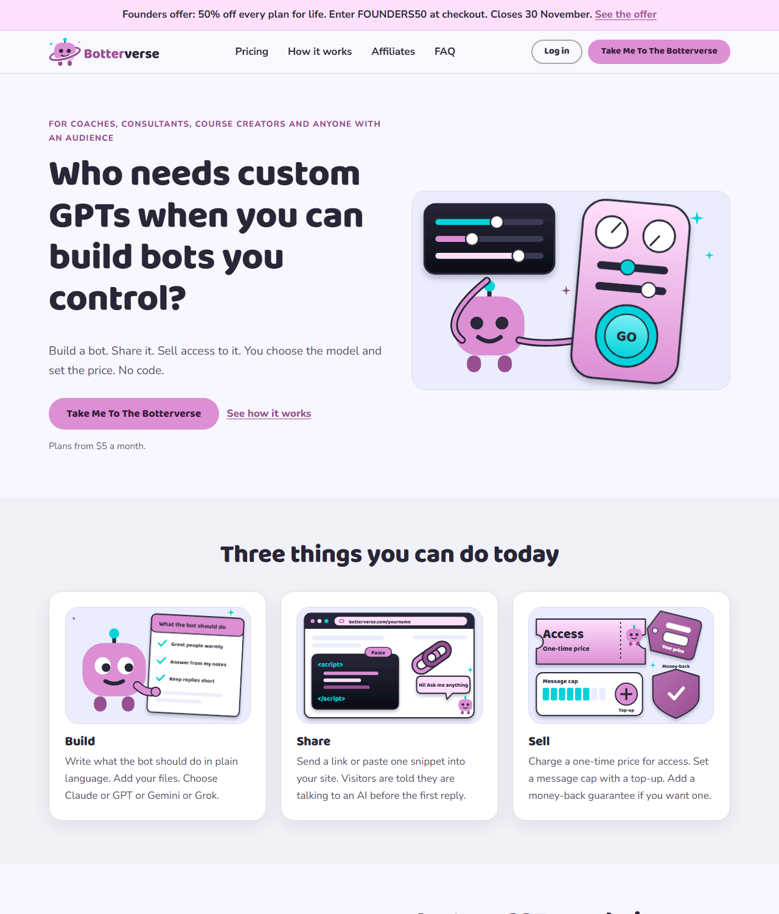
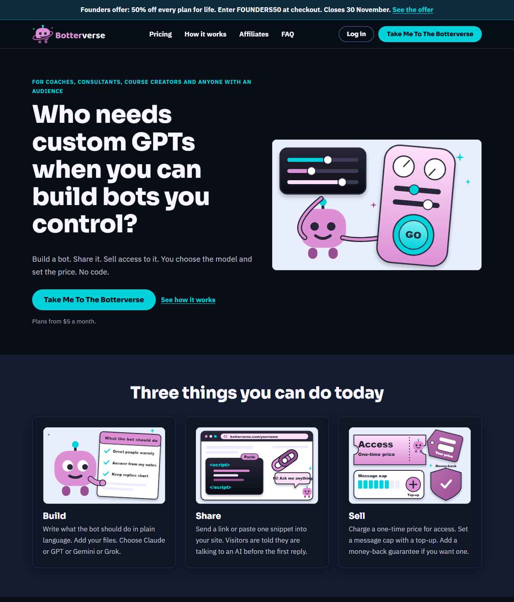
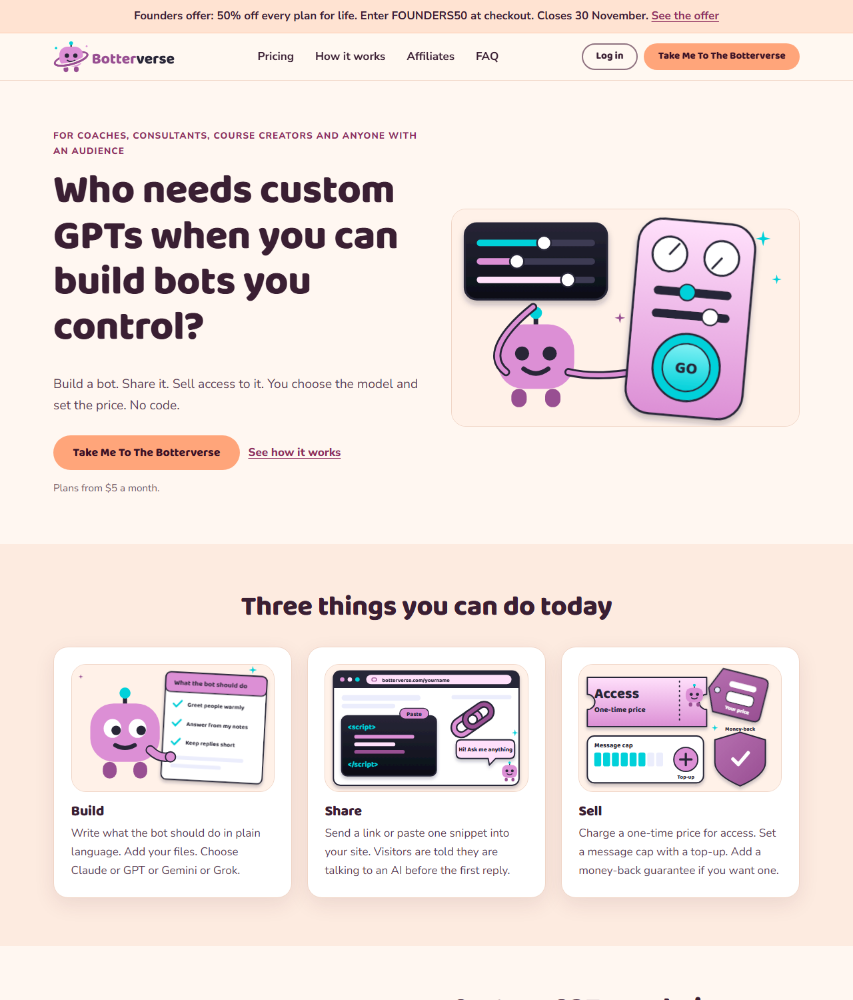
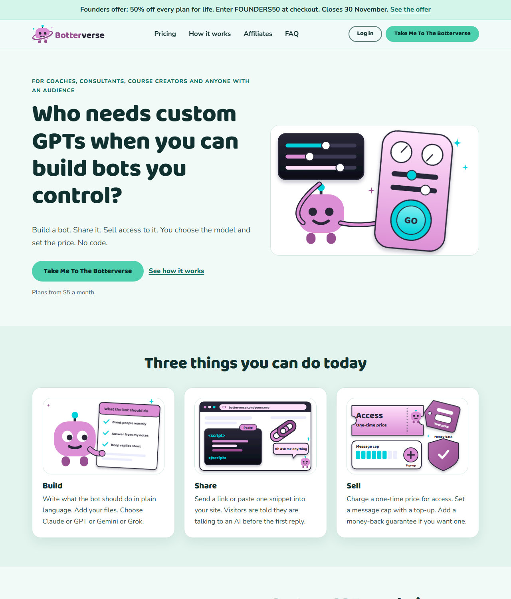
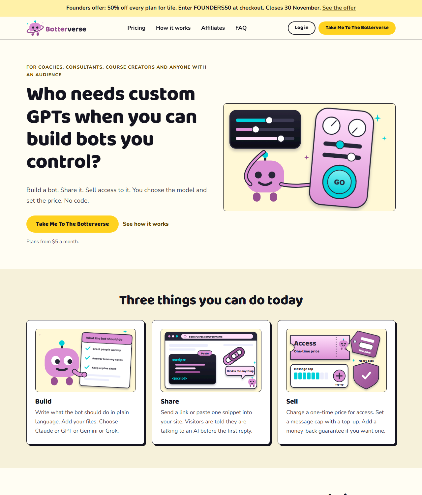

Home page colour options
Five complete Home pages with the same copy. Each keeps the logo and the pictures legible. Open each one and compare.
The main theme as it stands. Soft lilac page with pink buttons and plum links.
Page #f8f7ff - cards #ffffff - button #dc8fd5 with text #391d37 - links #984f92 - text #282637 - closing band #282637
All AA checks pass. Lowest ratio 4.5 to 1 (links on the Founders band). Button text 4.9. Links on page 5.1. Body on cards 8.2.

Open option 1Dark navy page with cyan buttons and links. Pictures sit on pale panels so the pink and cyan art stays clear.
Page #080d16 - cards #0f1626 - button #00d1da with text #04070f - links #00d1da - text #f8f7ff - closing band #141c30
All AA checks pass. Lowest ratio 6.7 to 1. Button text 10.7. Links on page 10.3. Body on cards 10.4.

Open option 2Warm peach page with plum text and links. Soft and friendly.
Page #fff7f1 - cards #ffffff - button #ffa57a with text #3a1226 - links #8f2f5f - text #3a1f33 - closing band #3a1f33
All AA checks pass. Lowest ratio 5.9 to 1. Button text 7.2. Links on page 7.2. Body on cards 9.4.

Open option 3Fresh pale mint page with deep teal text and links. Calm and clean.
Page #f1faf7 - cards #ffffff - button #4fd1b0 with text #062a25 - links #0a6a5c - text #10312f - closing band #0c3d3b
All AA checks pass. Lowest ratio 5.6 to 1. Button text 6.5. Links on page 6.1. Body on cards 9.0.

Open option 4Bold near-black ink on warm white with sunshine yellow buttons. Square corners and hard shadows.
Page #fffdf3 - cards #ffffff - button #ffd21f with text #14141f - links #5c4100 - text #14141f - closing band #14141f
All AA checks pass. Lowest ratio 6.8 to 1. Button text 10.7. Links on page 9.3. Body on cards 11.1.

Open option 5